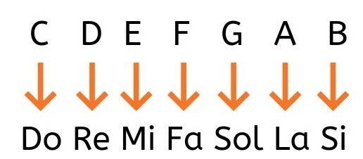

Estos acordes de guitarra, junto con los acordes menores, son los acordes más básicos y a la vez más importantes dentro de la música.
Ambos acordes se suelen clasificar con los nombres de las notas (Do, Re, Mi, Fa, Sol, La, si) o con la notación anglosajona (C, D, E, F, G, A, B):

Finalmente, para diferenciar un acorde mayor de uno menor, a este último le añadimos una «m» minúscula. Por ejemplo Dom es Do menor. También se le puede llamar Cm.
Si es mayor no se le pone nada y si es de séptima se le añade un siete al lado, por ejemplo Sol7 o G7.